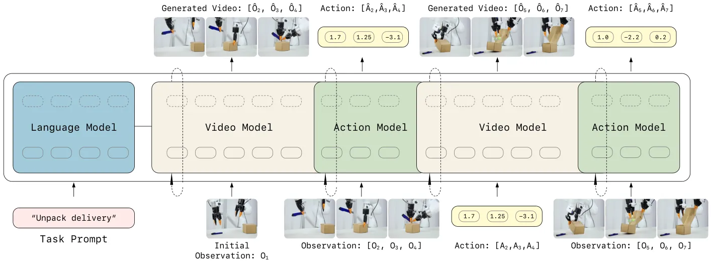
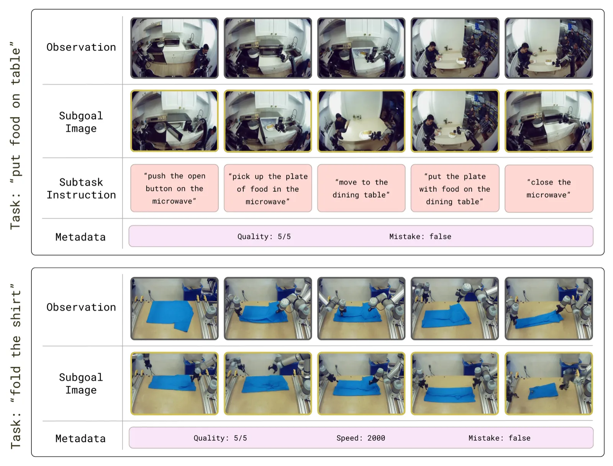
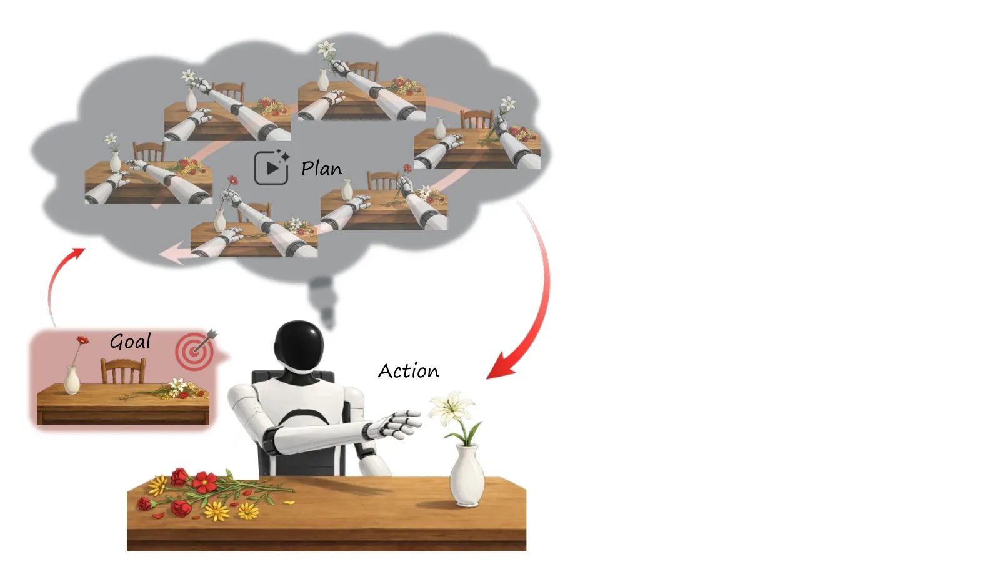

技术博客 · 具身智能
从 Intention 出发：语言是第一公民吗？
关于机器人学习里"接下来要做什么"的表示问题
引言
机器人学习到底在学什么？一个很直接的回答是：学习一个从 intention（意图）到 action（动作）的映射。
在目前主流的机器人学习范式里，intention 通常由 language 来表示——给机器人一句指令，它输出一串动作。这也是以 RT-2 [1]、OpenVLA [2]、π0/π0.5 [3, 4] 为代表的 VLA（Vision-Language-Action）模型爆火的重要原因：语言是天然的、通用的、可以无限组合的条件信号，互联网上又有海量的语言-视频数据可以用来对齐。
但退一步想，语言真的适合当 intention 的"第一公民"吗？未必。
试着想一个场景：你把一个玩具用力扔向远处。如果你把家里的小狗训练得不错，它会立刻跑过去把玩具叼回来交给你。行为生物学研究早就表明，狗主要靠观察人的动作、眼神和身体朝向来判断"接下来该做什么" [16]；它虽能学会一些词语，但那是联想式的，谈不上"听懂语言" [17]。人并没有给狗发过任何指令，狗却完成了一个完整的"跑过去—叼起来—交给你"的闭环。
这个例子想说明的是：在语言出现之前，intention 就已经存在了。 intention 的本质是"接下来要做什么"这个计划本身，而语言只是它的一种（相当晚近的）编码方式。
那么，robot learning 的第一步，或许应该是先弄清楚：什么可以表示 intention？ 这正是本文想讨论的问题。我们会先给 intention 一个数学上的位置（第 1 节），然后沿着一条连续的谱系展开——从语言（第 2 节）、到图像/视频（第 3 节）、到演示的上下文注入（第 4 节），最后在结语里回到一个更根本的怀疑。
语言（符号、抽象、有歧义）→ 图像/视频（像素、具体、无歧义）→ 演示 / 上下文（in-context，直接注入）
贯穿全文的主线只有一条：intention 的价值，在于为"从 condition 到 action"的映射注入"接下来要做什么"的信息，从而压缩动作的不确定性，进而在数据不足的背景下降低学习的难度。
1. 为什么 intention 重要：一个数学视角
无论是今天的 VLA，还是以世界模型为核心的 action model，一个默认的设定都是学习条件策略：
$$\pi(a \mid o, l)$$
即从 condition（观测 $o$ + 语言指令 $l$）到 action $a$ 的映射。这个设定本身没有问题——真正的问题是：condition 往往不够明确。 当同一个观测和指令背后对应着多个同样合理的动作时，这个"映射"就出问题了。
1.1 多值映射：一个不适定问题
从数学上看，$\pi(a \mid o, l)$ 学习的并不是一个函数，而是一个多值映射（relation）：给定 $c = (o, l)$，可能存在 $a_1 \neq a_2$，使得 $p(a_1 \mid c) > 0$ 且 $p(a_2 \mid c) > 0$。换句话说，解不唯一——这是典型的不适定问题（ill-posed problem）。
数学上处理不适定问题的标准手段，是引入先验或额外信息来约束解空间。intention 正是这样一种"额外信息"：它把"解不唯一"中被隐藏起来的那个自由度，显式地表达了出来。
1.2 多峰分布：能表达 ≠ 能解决
同一个问题，换到分布形态的视角看就更清楚了：因为同一个 condition 对应多个同样合理的动作，条件分布 $p(a \mid c)$ 天然是多峰（multimodal）的。当前 VLA 的一种主流做法，是用 diffusion 或 flow matching 让策略能够表达这种多峰分布——模型不再像早期的回归式策略那样，被迫把多个合理动作"平均"成一个两头不靠的动作。
但依靠 flow matching，真的能把问题解决吗？未必。多峰只是让模型"有能力表达"多种可能，并没有替它消解歧义——在 action chunk 的预测模式下，这个缺陷会被放大：模型一次性预测一段未来动作并开环执行，如果这段动作本身存在多值映射，每一步都意味着一次"分支选择"；而一步选错，后续整段动作都建立在错误的状态之上，compounding error 沿时间累积，动作越长越不可信。
因此，把多峰分布消解成单峰分布——让"接下来该做什么"在每一步都只有一个明确答案——似乎是一个自然的选择。而 intention 做的正是这件事：把那个让分布变多峰的自由度显式地提出来，作为额外信息喂给模型，让分布重新"收紧"。
1.3 信息论视角：条件熵与互信息
更精确的表述可以用条件熵给出。$H(A \mid C)$ 衡量的是"给定 condition $C$ 之后，动作 $A$ 还剩多少不确定性"。引入 intention $I$ 之后，条件熵可以被分解：
$$H(A \mid C) = H(A \mid C, I) + I(A; I \mid C)$$
其中 $I(A; I \mid C)$ 是给定 $C$ 后 $I$ 关于 $A$ 的互信息。它越大，$H(A \mid C, I)$ 就降得越低，动作预测的搜索空间就越小。因此，intention 建模在数学上做的事情，就是最大化 $I(A; I \mid C)$。
这为什么重要？关键在于样本效率：低熵的单峰条件分布，用同样数量的数据就能拟合得更准；模型也无需把容量浪费在编码歧义上——在数据稀缺的背景下，这是直接的学习效率提升。
2. 从语言扩展 intention：hierarchical policy
虽然前面挑战了语言作为 intention 的诸多不足，但不可否认的一件事情是，在这个主要由人类构建起来的世界当中，语言大概还是可以作为一个重要的 intention 表示。只是语言作为 intention 远远不够完美，因为同样的一句话，不同的人可能会有不同的理解：当我给机器人发一个指令，希望它给我做一顿可口的午饭，其实我只是告诉了它我需要一顿饭，而没有说应该从冰箱里拿什么东西、做一顿什么样的饭；把镜头拉近一点，我让一个双臂机器人把香蕉放到盘子里，这条指令也没有告诉它该用左臂还是右臂去完成。种种这样的问题，说到底是因为语言虽然信息密度极高，但能表达的信息依然不够，并且常常带有歧义——尤其几何信息（手放在哪、朝哪个方向用力）和程度信息（多少、多快），几乎是缺失的。
不过终归来说，更详细的语言描述可以带来更详细的 intention 表示。一个简单的方式就是把指令写得越细越好，而更系统化的路线是 hierarchical policy，让"做什么"和"怎么做"分层。π0.7 就是用 subtask 来做高层的规划，把一个有歧义的 intention 拆成一串明确的子任务，歧义也就被显化了 [5]。RT-H 沿着这个思路又往下走了一层，在任务和动作之间先预测 language motion（比如"向前移动手臂"）这种半语言半动作的中间表示，人还可以直接在这个层面去干预、纠正机器人 [6]。顺带一提，MUTEX 让同一个策略同时接受文本、图像目标、视频演示这些不同模态的任务描述，各模态之间还互相增强 [7]——这其实已经在暗示，语言并不是 intention 的唯一入口。
这条路收益是明确的：语义歧义被消解了，还附带了可干预性。但它有个天花板——止步于语言能表达的部分。对于接下来应该做一个什么样的动作，很多时候语言就是说不清楚。
3. 从图像/视频扩展 intention：world model
前面聊完了怎么从语言的角度去消解歧义、增强 intention，但对于接下来应该做一个什么样的动作，很多时候是语言难以描述清楚的，那什么才是一个更好的描述方式？人类社会里妈妈教小孩用筷子的时候，通常不是用语言教的，主要是靠演示。一段演示可能才是更好的 intention 表示——它把目标、顺序，连同所有语言说不清的几何细节都装了进去。
但真正在部署机器人的时候，我们不可能随时都有一个人带着机器人做。好在视频生成模型这几年发展得很快，这给了机器人一件天然的武器：既然没有人带着机器人做，那就让视频生成模型来生成下一步应该怎么动。这就是今天各种 world model 的做法。
3.1 直接生成视频
最直接的做法是生成未来一段时间的完整视频，把整段计划画出来。LingBot-VA 是这条路线的代表：把视频 token 和动作 token 交错成一条因果序列，用双流的 Transformer 同时建模"世界怎么变"和"接下来怎么动"，动作部分相当于一个逆动力学模型，从想象出来的画面里解码动作；执行的时候用真实观测去替换视频的 KV cache，防止想象越漂越远 [8]。UniPi 是更早也更干脆的探索——直接把策略问题改写成文本条件下的视频生成：先用扩散模型生成一段"计划视频"，再从中提取控制动作 [9]。

3.2 生成未来 image frame
当然，生成完整视频的代价是昂贵的：推理慢，还要维持时序上的一致性。更轻量的做法是只生成稀疏的未来关键帧（subgoal image），把稀疏帧当作 intention 的锚点，中间的动作交给策略自己去补。这条线可以追溯到 SuSIE：用图像编辑模型把当前画面按指令"编辑"成几秒之后的子目标图像，再交给一个不看语言的 goal-conditioned 策略去逼近 [13]。π0.7 也是同样的思路，prompt 里最多放三张多视角的子目标图像（主视角约束物体和场景，腕部视角约束夹爪位姿），由一个轻量的世界模型按需生成 [5]。子目标图像把问题变成了逆动力学：给定当前画面和一幅近未来的画面，推断中间的动作序列。语言说清"做什么"，图像补上语言缺失的"做到什么程度"。

Act2Goal 把稀疏帧的想象做得更系统：用一个 goal-conditioned 的视觉世界模型，从当前观测想象出一串通往目标图像的中间视觉状态，再把想象帧分成近端密集帧（负责闭环的精细控制）和远端稀疏帧（锚定全局一致性）[11]。PIDM（Seer）则把这件事说得最直白：视觉前瞻模块负责预测未来的画面，动作头就是一个纯粹的逆动力学——任务的规划和动作的预测被彻底解耦 [12]。

这一类做法的共同点，是把"目标"放进了和观测同构的视觉空间：模型学的不再是隔着语义鸿沟的"语言 → 动作"，而是"当前画面 → 想象的未来画面 → 动作"，其实更接近一个逆动力学问题。代价是生成本身的不确定性——幻觉、漂移——需要闭环修正这些工程手段去兜底。GR00T-Dreams 甚至反过来用视频世界模型批量生产训练数据 [10]，算是把这件武器用到了另一个方向。
4. 从演示扩展 intention：in-context learning 的直接注入
前面几节的路线，不管是用更细的语言还是生成的图像/视频，都是在 inference-time 通过 test-time 的 intention 预测来实现 intention 的增强；而最近开始关注度越来越高的 in-context learning，是在 condition 本身来实现对 intention 的增强——不构造也不生成，把一段演示直接放进 context，让模型"看一遍就会"。
GEN-1.5 把 3–12 秒的演示直接拖进 context window，零梯度执行，Generalist 管这个叫 physical prompting [14]。他们说没有为 ICL 做任何专门的设计——没有 meta-learning，没有辅助目标——能力是大规模预训练之后自然涌现的，就像 GPT-3 的 one-shot 一样。更有意思的是，两个独立的演示放进同一个 context，会被自动组合成一个连续的技能，中间缺的衔接动作模型自己补上。Skild 的 S1 更激进，单条人类视频当 prompt，零微调执行十分钟级的多步任务 [15]，而且它把演示当作目标规范而不是轨迹复现——演示者磕鸡蛋磕得稀烂，它用干净的动作完成同一步——说明它从视频里读出的是"要达成什么"，而不是每个动作怎么复制。
这两家做的事情一脉相承：intention 的载体从训练参数转移到了推理上下文，技能活在 context window 里，清空窗口它就消失了。用第 1 节的话说，演示就是那个"额外信息" $I$，只不过它是推理时被直接注入的——"最大化互信息"从训练目标变成了上下文里的操作。
结语：未来的 intention 表示（无 intention 增强）
前面我们讨论了三种 intention 增强的路线：更细的语言描述、生成的图像/视频，以及直接注入上下文的演示。可是参考动物的行为，也许这些都不是最终的答案。某种程度上，这三类增强都发生在具身智能数据严重不足、而语言模型与视频生成模型已经足够强大的背景下——它们其实是借邻居的能力做 test-time scaling：hierarchical 模型借 LLM 拆解子任务，world model 借视频生成"想象"未来，in-context learning 则是把演示直接送进预训练模型的上下文。一旦数据多起来，train/test 的 gap 会逐渐缩小，端到端模型大概会像今天的 LLM 一样直接学到大部分能力（大多数 LLM 还是用 teacher-forcing 训练的，并不妨碍它们在真实任务里发挥作用），这些借力式的增强也就没那么必要了。所以长期来看，具身智能很可能也会走上这条路：用足够的数据直接训练端到端模型，而 long-horizon planning 会像 RL 之于今天的 LLM 一样成为绕不开的焦点。
致谢
感谢与 jjgong.com 和 Haocheng Xu 的讨论，本文的不少想法是在这些交流中逐渐成形的。
参考文献
[1] A. Brohan et al. RT-2: Vision-Language-Action Models Transfer Web Knowledge to Robotic Control. CoRL 2023. arXiv:2307.15818
[2] M. Kim et al. OpenVLA: An Open-Source Vision-Language-Action Model. ICLR 2024. arXiv:2306.09259
[3] K. Black et al. π0: A Vision-Language-Action Flow Model. CoRL 2024. arXiv:2410.24164
[4] Physical Intelligence. Scaling Robot Learning with Real-World Data (π0.5). NeurIPS 2025. arXiv:2510.11650
[5] Physical Intelligence. π0.7: A Steerable Generalist Robotic Foundation Model with Emergent Capabilities. 2026. arXiv:2604.15483
[6] S. Belkhale et al. RT-H: Action Hierarchies Using Language. 2024. arXiv:2403.01823
[7] R. Shah, R. Martín-Martín, Y. Zhu. MUTEX: Learning Unified Policies from Multimodal Task Specifications. CoRL 2023. arXiv:2309.14320
[8] Robbyant（蚂蚁灵波科技）. LingBot-VA: Causal Video-Action World Model for Generalist Robot Control. RSS 2026. arXiv:2601.21998
[9] Y. Du et al. Learning Universal Policies via Text-Guided Video Generation (UniPi). NeurIPS 2023. arXiv:2302.00111
[10] NVIDIA. DreamGen: Unlocking Generalization in Robot Learning through Neural Trajectories（Isaac GR00T-Dreams）. 2025. arXiv:2505.12705
[11] P. Zhou et al. Act2Goal: From World Model To General Goal-conditioned Policy. AgiBot Research. 2025. arXiv:2512.23541
[12] Y. Tian, S. Yang et al. Predictive Inverse Dynamics Models are Scalable Learners for Robotic Manipulation (PIDM / Seer). ICLR 2025. arXiv:2412.15109
[13] K. Black et al. Zero-Shot Robotic Manipulation with Pretrained Image-Editing Diffusion Models (SuSIE). ICLR 2024. arXiv:2310.10639
[14] Generalist AI. GEN-1.5: Robots Learn New Tasks from a Single Demonstration via Physical Prompting. 2026. generalistai.com/blog/gen-1.5
[15] Skild AI. S1: Visual In-Context Learning for Long-Horizon Robot Manipulation. 2026. skild.ai/blogs/s1
[16] B. Hare, M. Tomasello. Domestic Dogs (Canis familiaris) Use Human and Conspecific Social Cues to Locate Hidden Food. Journal of Comparative Psychology 113(2): 173–177, 1999. doi:10.1037/0735-7036.113.2.173
[17] A. Andics, A. Gábor, M. Gácsi, T. Faragó, D. Szabó, Á. Miklósi. Neural Mechanisms for Lexical Processing in Dogs. Science 353(6303): 1030–1032, 2016. doi:10.1126/science.aaf3777